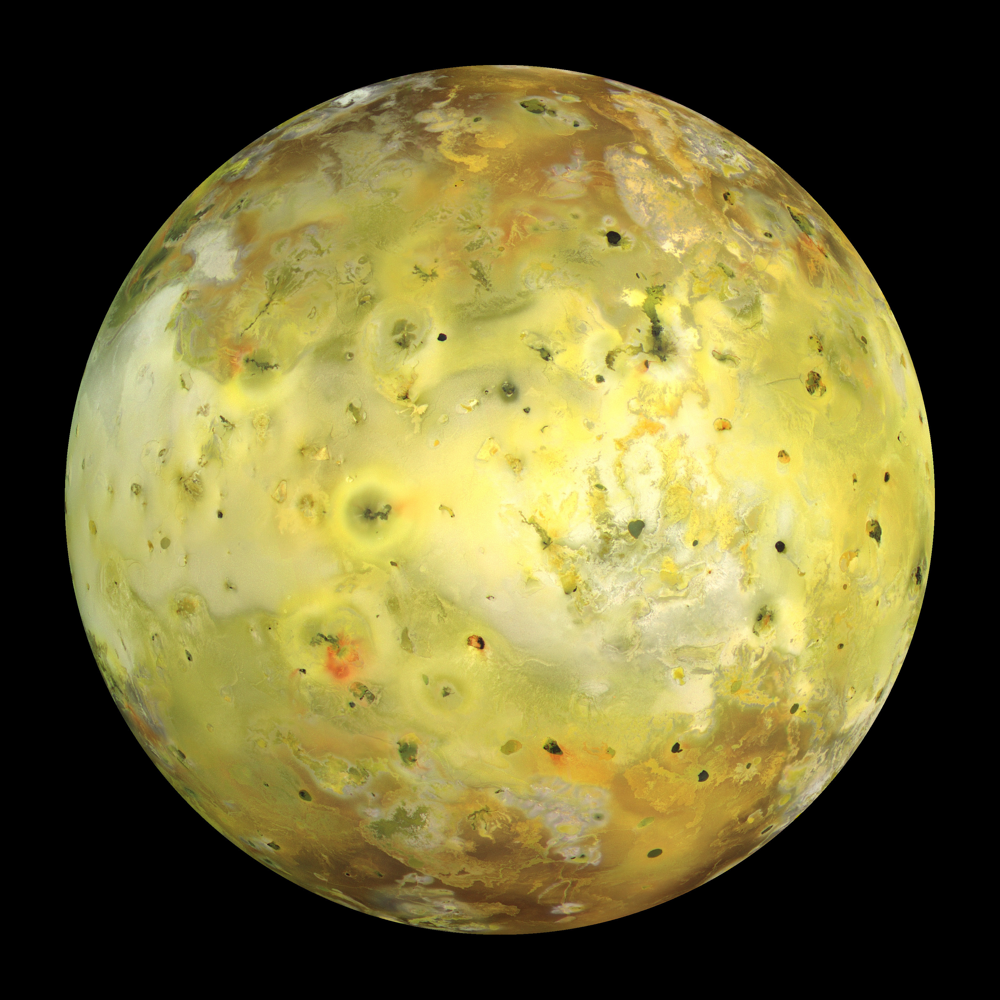
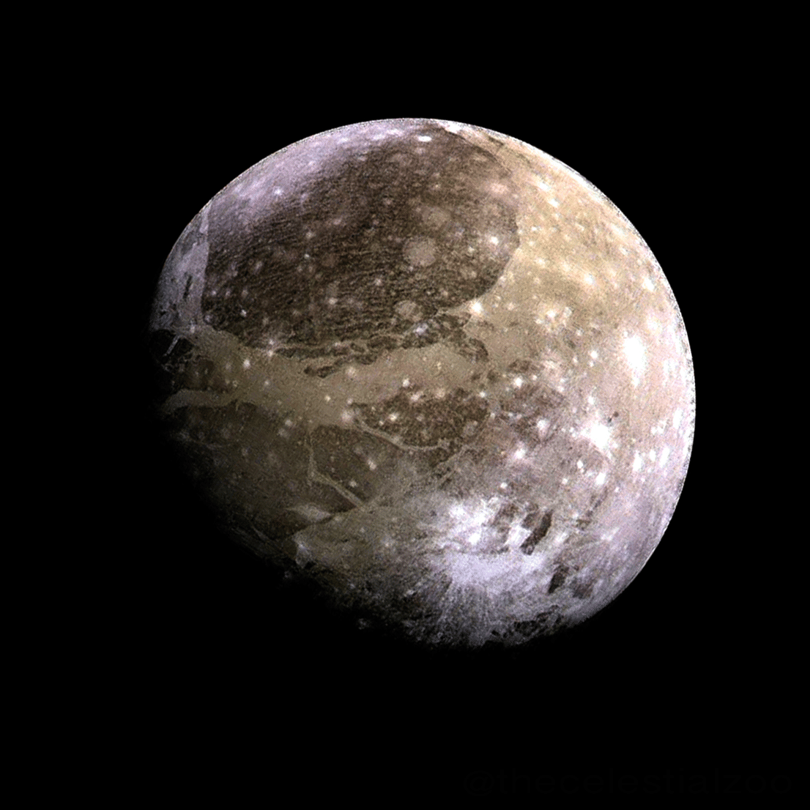
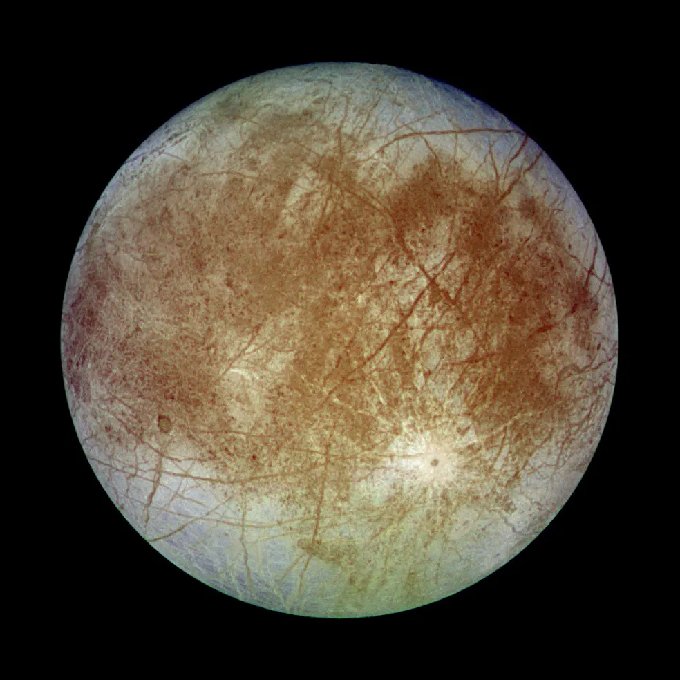

SOBRE JUPITER
Júpiter é o quinto planeta a partir do Sol e o maior do Sistema Solar, com uma massa 2,5 vezes maior que a de todos os outros planetas juntos. É um gigante gasoso composto essencialmente por hidrogênio e hélio, sem superfície sólida.
Sua Rotação (duração do dia) dura apenas 9,9 horas, da qual é considerado o o planeta com o dia mais curto do Sistema Solar.
Já a sua Translação (duração do ano) dura cerca de 12 anos terrestres, equivalente a 4.333 dias da Terra.
PRINCIPAIS LUAS
Além do quarteto principal, Júpiter possui dezenas de luas menores e irregulares. A maioria delas não tem formato esférico e possui apenas alguns quilômetros de diâmetro. Muitas dessas luas menores são asteroides ou fragmentos capturados pela enorme força gravitacional do planeta ao longo de bilhões de anos.
Com mais de 90 luas catalogadas, o sistema de Júpiter funciona quase como um "mini sistema solar", sendo alvo de missões espaciais de sondas que buscam entender os mistérios dessa região.
Júpiter tem 95 luas confirmadas, mas seu sistema é dominado pelas quatro Luas Galileanas: Io, Europa, Ganimedes e Calisto.

IO

GANIMEDES

CALLISTO
